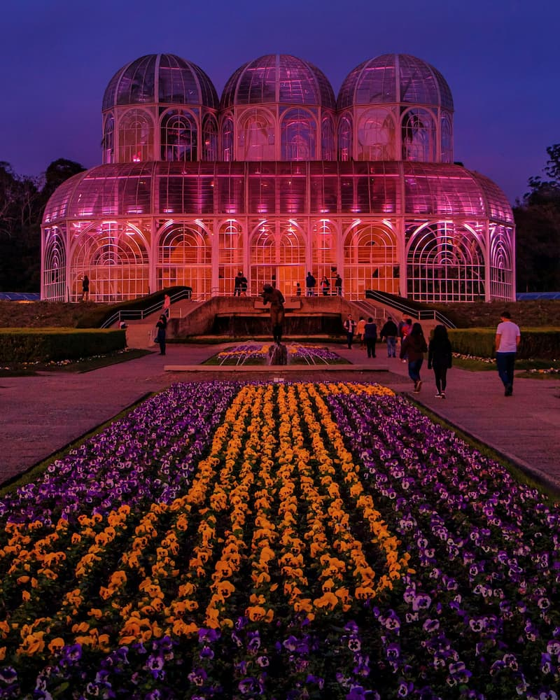

Curitiba-PR
Curitiba é minha cidade favorita pela combinação rara de organização urbana, qualidade de vida e contato com a natureza. A cidade consegue ser eficiente no dia a dia, com planejamento bem estruturado, ao mesmo tempo em que oferece muitos parques e áreas verdes que tornam a rotina mais leve e agradável. O clima mais frio também contribui para um ambiente aconchegante, e a variedade cultural e gastronômica traz sempre algo novo para explorar. No conjunto, Curitiba transmite uma sensação de equilíbrio entre praticidade e bem-estar que poucas cidades conseguem oferecer.
